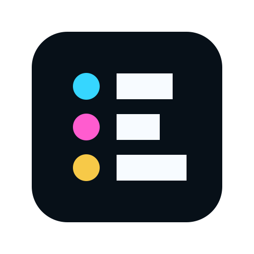
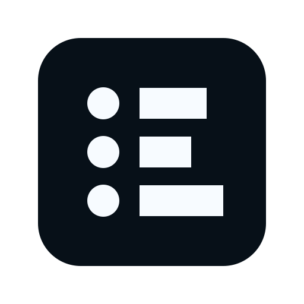
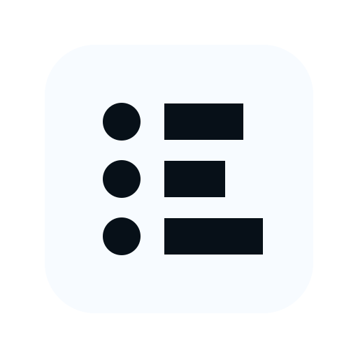
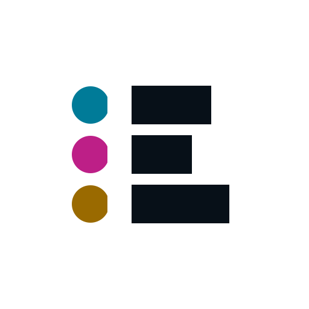
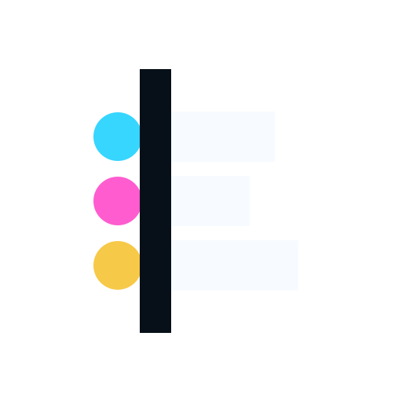
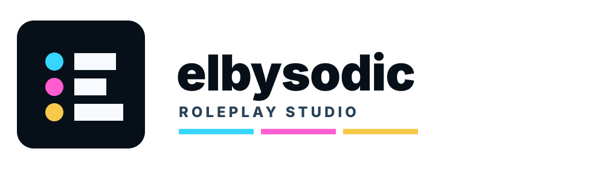
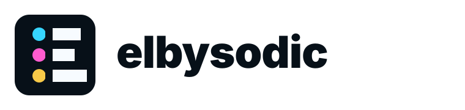
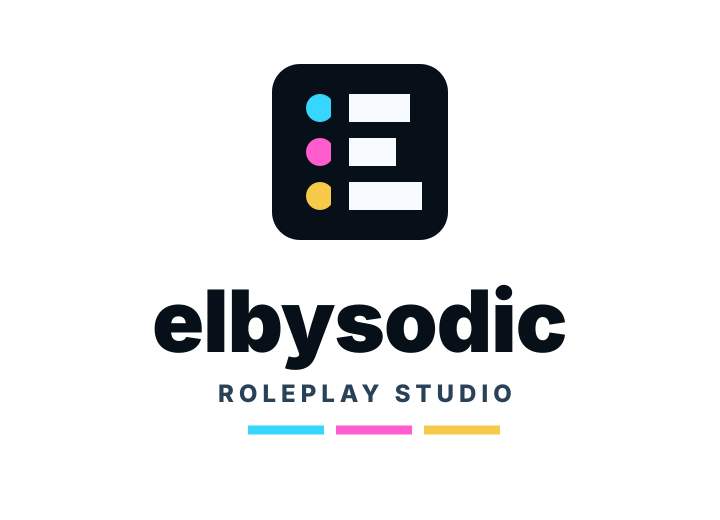

Circle Terminals
Elbysodic's selected logo direction: a progressive thread mark built from face terminals and reply bars. It is an E, a roster, and a thread without becoming a generic forum symbol.

Core Read
The final structure is o -- / o - / o ---. That makes the mark feel like a thread in motion: an opening post, a reply beat, and a continuing scene. The circles are faces. The bars are posts. The whole object resolves into an Elbysodic E.
Assets
Primary
Small size

One color dark

One color light

Bare on light

Bare on dark

Online Sizes
Favicon
App Icon
Header
elbysodic
Lockups

Compact

Stacked
